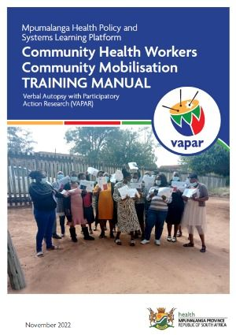
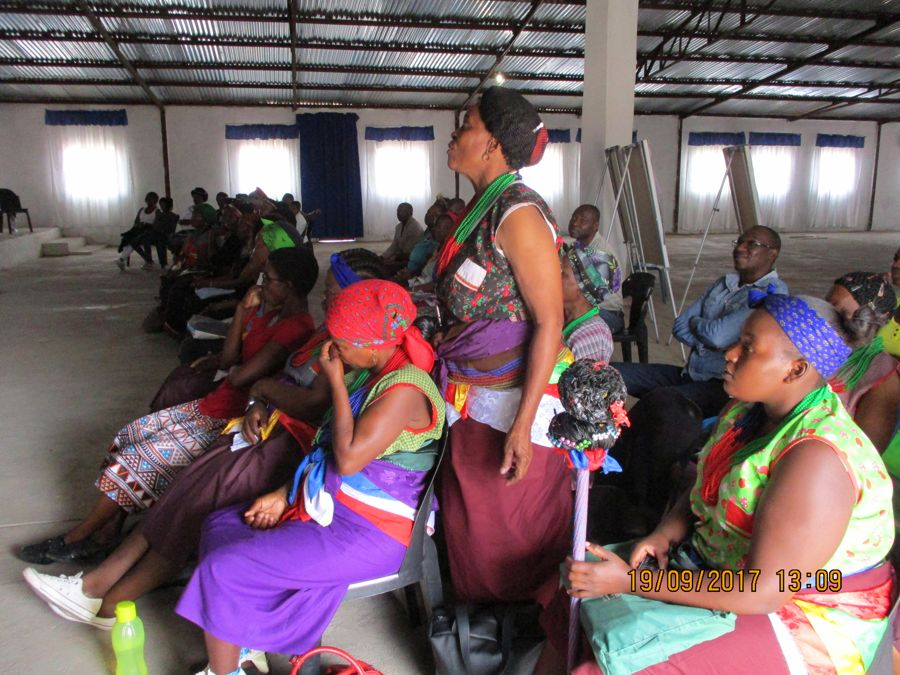

This platform is part of the VAPAR (Verbal Autopsy with Participatory Action Research) initiative to connect communities, government policy and planning, and researchers to generate, act on and learn from research evidence on key, local priorities. The learning platform supports the public, policy makers, analysts, researchers, evaluators and planners to engage and learn by generating local data of practical relevance.
Featured resource
Delivering new Community Health Worker (CHW) training in community mobilisation
This manual contains a set of tools that can be used by Community Health Workers (CHWs) working in their designated areas as part of Ward Based Primary Healthcare Outreach Teams.
“The manual, from the department’s perspective, particularly at the sub-district level, inspires a great sense of pride about the realisation of the possibility of building capacity for this cadre of emerging health care workers in South Africa. The manual will go a long way in providing a practical and a formal tool to guide Community Health Workers through their day to day work with communities.” Mr R Mabika · Acting sub-district PHC manager


Who we are
Expanding the knowledge base through partnerships for action on health equity
Our learning platform addresses exclusion from access to health systems by connecting service users and providers to generate and act on research evidence of practical, local relevance.
Latest
Provincial scale-up: tools in use
In 2024 the VAPAR community mobilisation training was delivered across all three health districts of Mpumalanga. Two policy briefs set out what happened and the route from project to system.